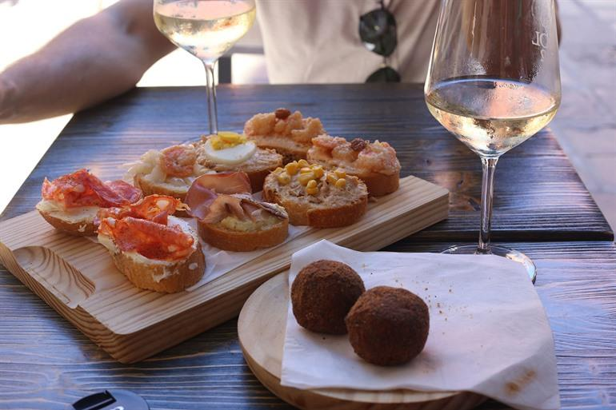
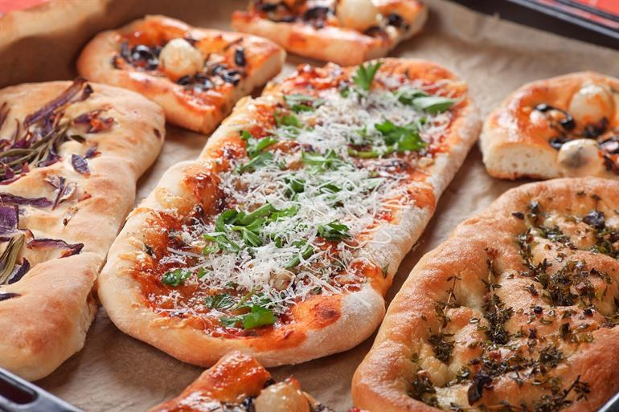
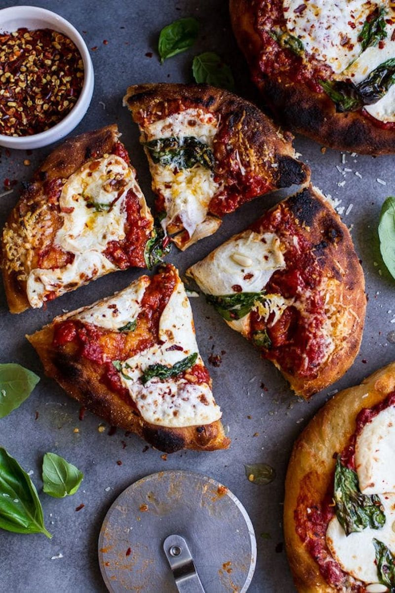
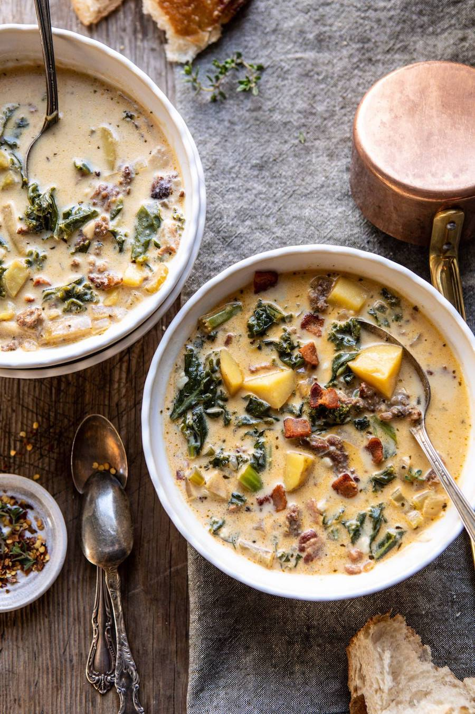
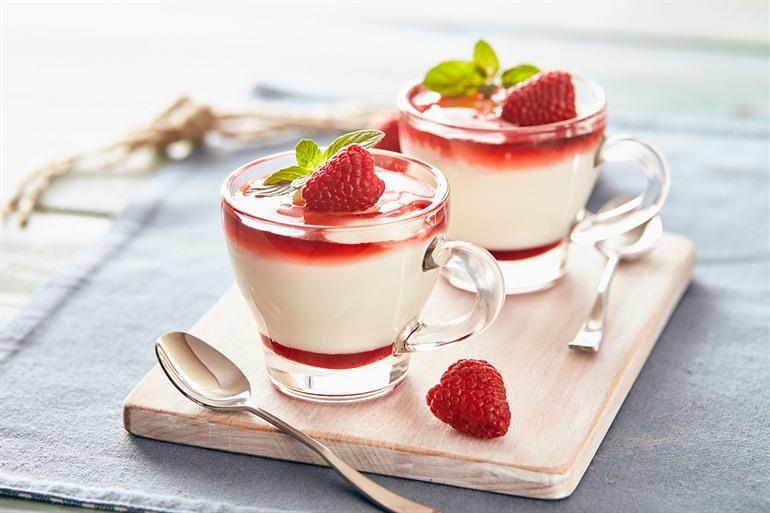

Appetizers
Buratta, a delicasy from Puglia. This cheese is made from buffalomozarella and cream and will be served with basil, tomatoes and bread.

Cicchetti, most common in Venetia. This are small delicous snacks on sliced baguettes. This appetizer can be well combined with wine.
Focaccia alla Genovese, most commonly found in Genua along the Riviera. This is the best focaccia worldwide because of the high quality olive oil and the combination of grains
Main dishes
Melanzane alla Parmigiana, a recipe made from thin eggplant slices and tomatoes topped with a crispy layer of parmezan cheese. Delicious to comibine with wine

Ossobuco Milanese, is a delicious recipe. As the name says it most commonly made in Milan. This speciality is veal shank that is cooked in white wine. Served with risotto or pasta.

The Montara Pizza is a quite special pizza. This pizza is made in a frying pan after that it also put into the oven the result is a unique and delicious pizza
Zuppa toscana, a recipe originally from the region toscana. This is a healthy soup made of kale, zucchini, canelli beans, potatoes, celdery, tomatoes and bacon for the meat-eaters
Deserts
Panna cotta, this is one of the most well-known deserts of Italy. Panna cotta means cooked cream this is the most important ingredient. The recipe originates from Piëmont.
Semifreddo, is somewhat similar to ice cream since it is a frozen desert. The texture and structure however are more similar to that of something like a chocolat mousse.

Tiramisu is a recipe that can't miss in any Italian restaurant. Since this recipe is not new for most people a funfact. Tiramisu means pull me up, in Italy "cheer me up" is meant by this. That is also why this recipe is server to people who are recovering from sickness